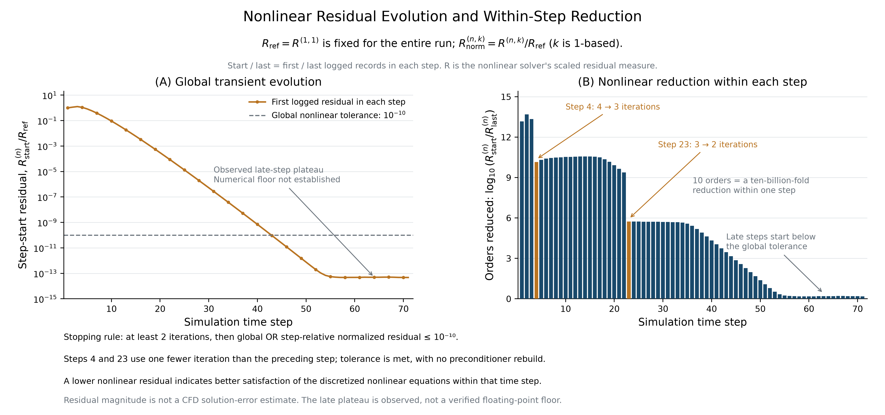
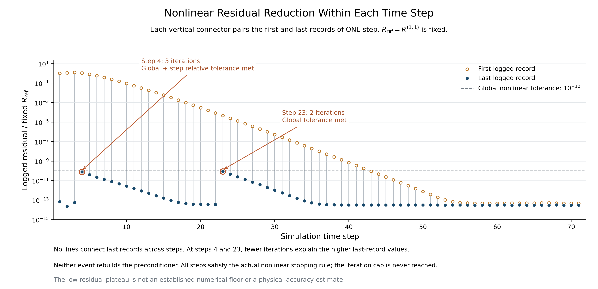
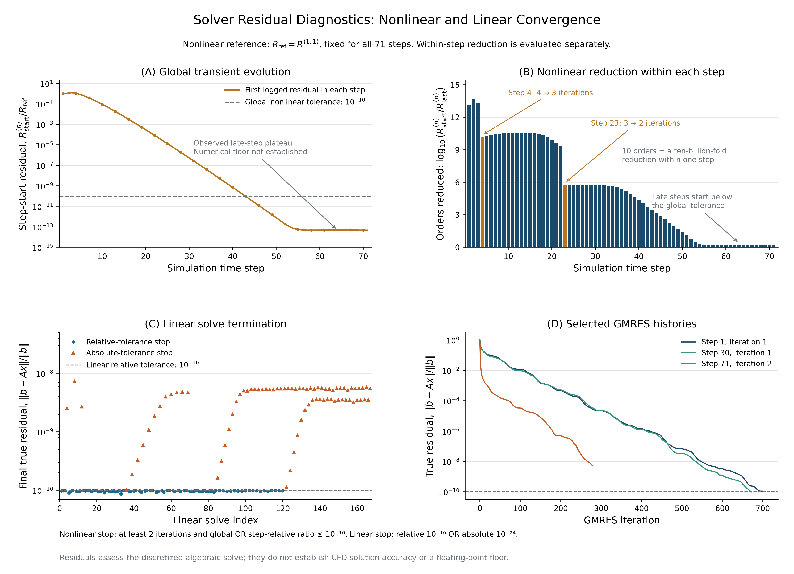

入口平均速度 2.0 mm/s 的已完成 FEM 流场。黑底三维可视化，整条血管放大显示；残差图采用白底学术样式。
下载 PPT（9 页，内嵌三段视频） · 中文说明 · 验证记录
三段视频均绕穿过血管中心的固定长轴匀速旋转，相机、焦点和缩放保持不变。18 秒，24 fps；展示冻结稳态结果，不表示 18 秒瞬态求解。

A：每步初始残差相对固定全程参考的变化。B：同一步首末残差下降的数量级。虚线是实际非线性容差；低残差平台不是已确认的浮点下限或物理精度。
主图 PDF · 主图 SVG · 源码与第 4、23 步核验说明

每条竖线仅代表同一个时间步。第 4、23 步比前一步少一次迭代即满足停止条件，没有预条件器重建。
配对图 PDF · 机器核验 · 逐步下降量 CSV

矢量 PDF · SVG · 单独非线性残差图 · 全部真实残差 CSV
71 个时间步，167 次线性求解。后期部分线性求解达到绝对容差而终止，图中的相对残差上升不表示求解失败。
实际 FEM 压力，单位 Pa；完整血管表面显示。
4K 静态图 · 下载 MP4 · 四个旋转视角
由当前速度梯度后处理获得，单位 Pa；原始面值和节点显示值均保留。
沿用原 96 条真实流线，三个出口均覆盖；未重新积分。
壁面 WSS CSV · 壁面 WSS VTP · 压力表面 VTP · 计算验证 · 媒体验证